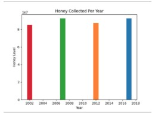

This is my Portfolio Page!

This is a user based cupcake simulator. The user has 3 options to design the cupcake: Cupcake wrapper color, frosting flavor and toppings. The final creation is highlighted by a flashing circle.
This is a user based game inspired from the dinosaur game. You use the arrow keys to move the dinosaur to get the coin. In order to get the coin, the dino has to avoid obstacles such as cacti, rocks and birds. The final screen shows "timer up" with the final score.
1.3.1 Scratch Project
This is a user based game where you design a pizza. You get to cut the pepperoni, include the sauce and cheese, and put the pizza in the oven. Gordon Ramsay insults the pizza creating along the way.
3.2.4 Spreadsheet Project

In this project, we were asked to analyze and graph the bees' production levels from a provided spreadsheet. We had to analyze in what conditon of the bees affected the amount of honey produced. By creating bar and line graphs, this helps us visualize the patterns and find the relationship between the bees and honey.
4.1.4 NetLogo Project
This is a simulation of cars going through a traffic intersection to help analyze traffic flow. We found that when cars approached the traffic lights slower and reduced their braking speed, this decreaes traffic and allows the cars to move smoothly. This simulation could have included other factors such as the cars making right and left turns and roads in construction to better represent traffic intersection in real life.
3.1.6 Rover Spreadsheet Project
We had to figure out which region the rover was in based on which conditions the given data fell under. By graphing the data of the four sensors and attempting to correspond each graph to the conditons, we concluded that the graphs best matched Inland Forests.